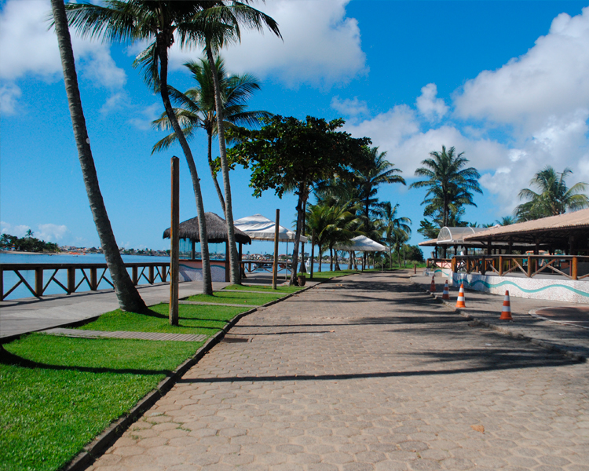
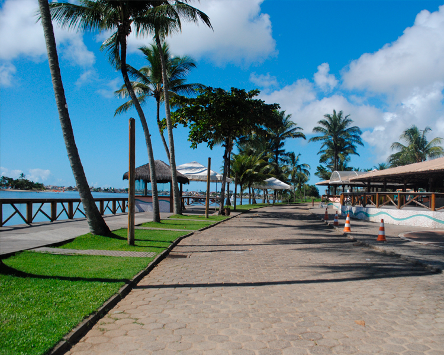
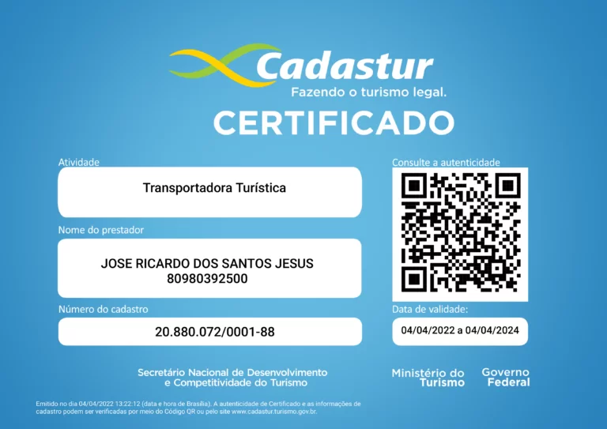

Transfer em Salvador e Região!

Hotéis e Resorts
Conheça os hotéis e resorts disponíveis para você.

Hotel Vila Galé Marés
O hotel Vila Galé Salvador fica mesmo em frente à praia de Ondina, a poucos minutos do centro e a apenas 20 minutos do aeroporto.
Reservar
Hotel Tivoli
O Tivoli está localizado na Praia do Forte, no litoral Norte baiano a cerca de 1 hora de carro do Aeroporto de Salvador (57 km).
Reservar
Hotel Iberostar Bahia
O hotel está localizado no município de Mata de São João, a cerca de 60 km do Aeroporto de Salvador ou 81 km do Centro de Salvador.
Reservar
Hotel Iberostar Praia do Forte
O hotel está localizado no município de Mata de São João, a cerca de 55 km do Aeroporto de Salvador.
Reservar
Hotel Grand Palladium
O Grand Palladium Imbassaí Resort & Spa fica a apenas 60 km de Salvador e 45 km do aeroporto, sendo de fácil acesso.
ReservarDestinos
Conheça os destinos mais visitados do Estado.
Chapada Diamantina
A Chapada Diamantina é uma região de serras, situada no centro do estado brasileiro da Bahia, parte de uma vasta cordilheira conhecida por Cadeia do Espinhaço " é um extenso planalto, que corresponde a 15% do Estado da Bahia" Nela nascem quase todos os rios das bacias do Paraguaçu, do Jacuípe e do Rio de Contas.
Morro de Sao Paulo
A Chapada Diamantina é uma região de serras, situada no centro do estado brasileiro da Bahia, parte de uma vasta cordilheira conhecida por Cadeia do Espinhaço " é um extenso planalto, que corresponde a 15% do Estado da Bahia" Nela nascem quase todos os rios das bacias do Paraguaçu, do Jacuípe e do Rio de Contas.
Praia do Forte
A Chapada Diamantina é uma região de serras, situada no centro do estado brasileiro da Bahia, parte de uma vasta cordilheira conhecida por Cadeia do Espinhaço " é um extenso planalto, que corresponde a 15% do Estado da Bahia" Nela nascem quase todos os rios das bacias do Paraguaçu, do Jacuípe e do Rio de Contas.
 

Ilheus
A Chapada Diamantina é uma região de serras, situada no centro do estado brasileiro da Bahia, parte de uma vasta cordilheira conhecida por Cadeia do Espinhaço " é um extenso planalto, que corresponde a 15% do Estado da Bahia" Nela nascem quase todos os rios das bacias do Paraguaçu, do Jacuípe e do Rio de Contas.
Guarajuba
A Chapada Diamantina é uma região de serras, situada no centro do estado brasileiro da Bahia, parte de uma vasta cordilheira conhecida por Cadeia do Espinhaço " é um extenso planalto, que corresponde a 15% do Estado da Bahia" Nela nascem quase todos os rios das bacias do Paraguaçu, do Jacuípe e do Rio de Contas.
Lençóis
A Chapada Diamantina é uma região de serras, situada no centro do estado brasileiro da Bahia, parte de uma vasta cordilheira conhecida por Cadeia do Espinhaço " é um extenso planalto, que corresponde a 15% do Estado da Bahia" Nela nascem quase todos os rios das bacias do Paraguaçu, do Jacuípe e do Rio de Contas.
Imbassaí
A Chapada Diamantina é uma região de serras, situada no centro do estado brasileiro da Bahia, parte de uma vasta cordilheira conhecida por Cadeia do Espinhaço " é um extenso planalto, que corresponde a 15% do Estado da Bahia" Nela nascem quase todos os rios das bacias do Paraguaçu, do Jacuípe e do Rio de Contas.
Costa de Sauípe
A Chapada Diamantina é uma região de serras, situada no centro do estado brasileiro da Bahia, parte de uma vasta cordilheira conhecida por Cadeia do Espinhaço " é um extenso planalto, que corresponde a 15% do Estado da Bahia" Nela nascem quase todos os rios das bacias do Paraguaçu, do Jacuípe e do Rio de Contas.
É com prazer que apresentamos nossos serviços.
Serviços
Conheça os principais serviços da RICTOUR em salvador e região.
Transfer
A Chapada Diamantina é uma região de serras
City Tour
A Chapada Diamantina é uma região de serras
Viagens
A Chapada Diamantina é uma região de serras
Á diposição
A Chapada Diamantina é uma região de serras
Quem somos
A RICTOUR é uma empresa de turismo que nasceu com o propósito de realizar os sonhos de viajar dos nossos clientes. Somos apaixonados por conhecer novos lugares, culturas e experiências, e queremos compartilhar essa paixão com você.
Oferecemos pacotes personalizados para diversos destinos de Salvador e Arredores, de acordo com o seu perfil, preferências e orçamento. Garantindo qualidade, segurança e conforto em todas as etapas da sua viagem. Além disso, contamos com uma equipe de profissionais qualificados e experientes, que estão sempre prontos para atender as suas necessidades e expectativas, desde o planejamento até o pós-viagem. Nós cuidamos de todos os detalhes para que você possa aproveitar ao máximo cada momento da sua aventura.
A Rictour é mais do que uma empresa de turismo, é uma empresa de realização de sonhos. Venha viajar com a gente e descubra um mundo de possibilidades.
Qualidade e Segurança
Conheça a nossa frota de veículos.
Certificação
Empresa Certificada e Cadastrada.
As empresas e profissionais no Cadastur estão aptos ao exercicio de suas atividades.
Depoimentos
O que os clientes dizem
Atribuímos um grande valor a relacionamentos sólidos e vimos os benefícios que eles trazem para o nosso negócio.
Transporte excelente, 5 estrelas para mim, com total segurança e cuidados em pequenos detalhes, recomendo para todos, farei mais viagens com ele, parapéns!
Vanusa Duarte Guerreiro
No inicio do ano, eu e minha familia decidimos fazer uma surpresa para parentes em salvador e uma prima resolveu toda logística do aeroporto para casa. Quando chegamos no aeroporto de SSA, encontramos com o Ricardo, que mesmo com atraso no voo, estava pacientemente nos esperando. Sempre simpático e com aquele sorriso no rosto, Ricardo nos fez sentir confortável. Com uma van extremamente limpa e confortável, foi o que precisávamos. E olha que somos uma família de cinco, três crianças que usam cadeirinhas. Próxima vez que estivermos na região, Ricardo, Rictour com certeza será o nosso meio de transporte de preferência. Qualidade garantida, super recomendo.
Felipe Campos
A Rictour é uma empresa séria. Comprometida com seus clientes e sua segurança. Eu indico!